它将网页划分成一个个网格，可以任意组合不同的网格，做出各种各样的布局;
<div class="content">
<div class="b">1</div>
<div class="b">2</div>
<div class="b">3</div>
<div class="b">4</div>
<div class="b">5</div>
<div class="b">6</div>
<div class="b">7</div>
<div class="b">8</div>
<div class="b">9</div>
</div>.content即为容器，.b即为项目。
行：row；
列：column；
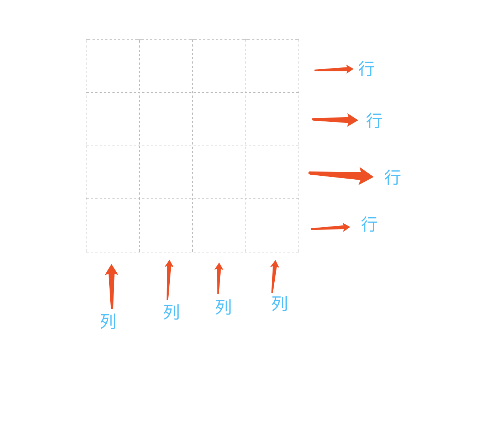
display:grid; //默认是块元素；
display:inline-grid; //行内块元素
指定一个容器采用网格布局；
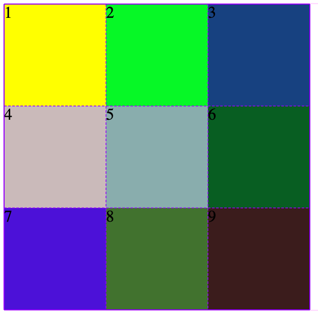
注意：设置为grid后，子元素的float,display: inline-block,display: table-cell、vertical-align和column-*等设置都将失效。
.content {
box-shadow: 0 0 1px #f6f;
display: grid;
grid-template-columns: 100px 100px 100px;
grid-template-rows: 100px 100px 100px;
}
grid-template-columns：定义每一列的列宽；
grid-template-columns：100px 100px 100px; //总共三列，每列列宽是100px；=
grid-template-rows：定义每一行的行高；
grid-template-rows：100px 100px 100px; //从上至下，每行高度为100px；
//除了使用像素，还可以使用百分比；
拓展：
重复写值很麻烦，可以用repeate函数；
repeat(次数，大小)；
例如：repeat(3,100px); //重复3次，每次100px；
repeat写法：
grid-template-columns：repeat(3,100px);
grid-template-rows：repeat(3,100px);
也可以重复某一种不固定大小模式；
例如：
grid-template-columns：100px 80px 100px;
改写成：
grid-template-columns：repeat(2,100px 80px); //代表重复2次100px 80px的模式；也就是4列；
等同于：
grid-template-columns：100px 80px 100px 80px;
如图：
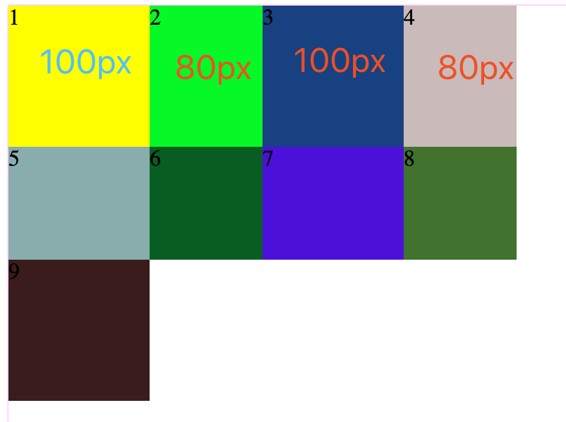
1,auto-fill;如果容器大小不固定，项目大小固定，可以用auto-fill关键字自动填充；
.content {
box-shadow: 0 0 1px #f6f;
display: grid;
grid-template-columns: repeat(auto-fill, 100px);
}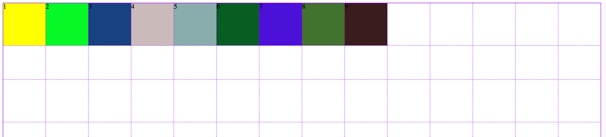
2,fr(fraction):如果两列的宽度分别为1fr和2fr，就表示后者是前者的两倍。
.content {
box-shadow: 0 0 1px #f6f;
display: grid;
grid-template-columns: 1fr 2fr;
grid-template-rows: repeat(3, 100px 80px);
}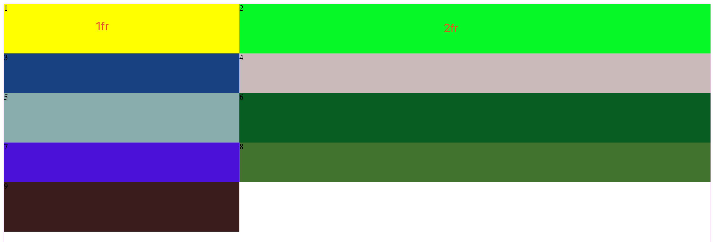
fr也可以和px配合使用；
.content {
box-shadow: 0 0 1px #f6f;
display: grid;
grid-template-columns: 400px 1fr 2fr;
}
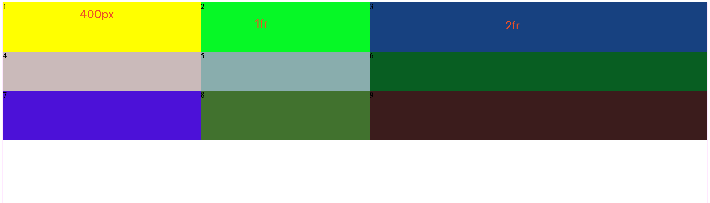
3.minmax();
grid-template-columns: 1fr 5fr minmax(100px, 1fr);
解释：第一列是1fr，第二列是5fr，第三列最小值是100px,最大是1fr。当第二列fr无限大时和第三列到100px时，会往第一列借值；
.content {
box-shadow: 0 0 1px #f6f;
display: grid;
grid-template-columns: 1fr 5fr minmax(100px, 1fr);
}
4.auto:自适应；
.content {
box-shadow: 0 0 1px #f6f;
display: grid;
grid-template-columns: 100px auto 100px;
}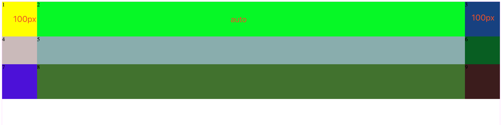
.content {
box-shadow: 0 0 1px #f6f;
display: grid;
grid-template-columns: [c1] 100px [c2] 100px [c3] auto [c4];
grid-template-rows: [r1] 100px [r2] 100px [r3] auto [r4];
}解释：指定每一根网格线的名字，方便以后的引用。
也可以有多个名字；[c1,c1a]
row-gap:行间距；
.content {
box-shadow: 0 0 1px #f6f;
display: grid;
grid-template-columns: 100px 100px 100px;
grid-template-rows: 100px 100px 100px;
row-gap: 20px;
}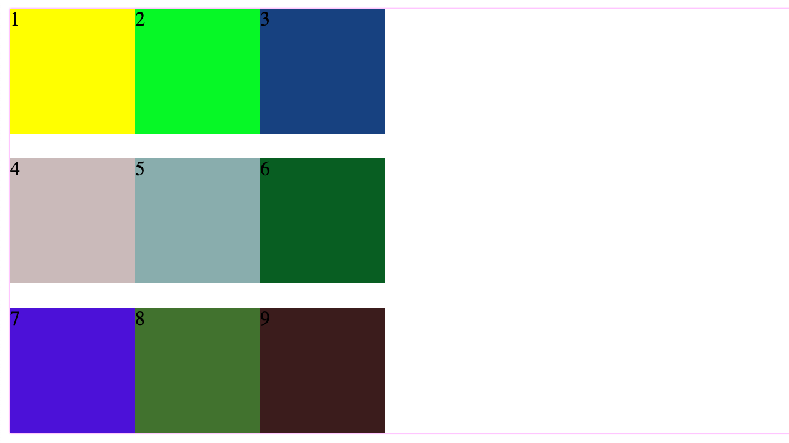
colum-gap:列间距；
.content {
box-shadow: 0 0 1px #f6f;
display: grid;
grid-template-columns: 100px 100px 100px;
grid-template-rows: 100px 100px 100px;
column-gap: 20px;
}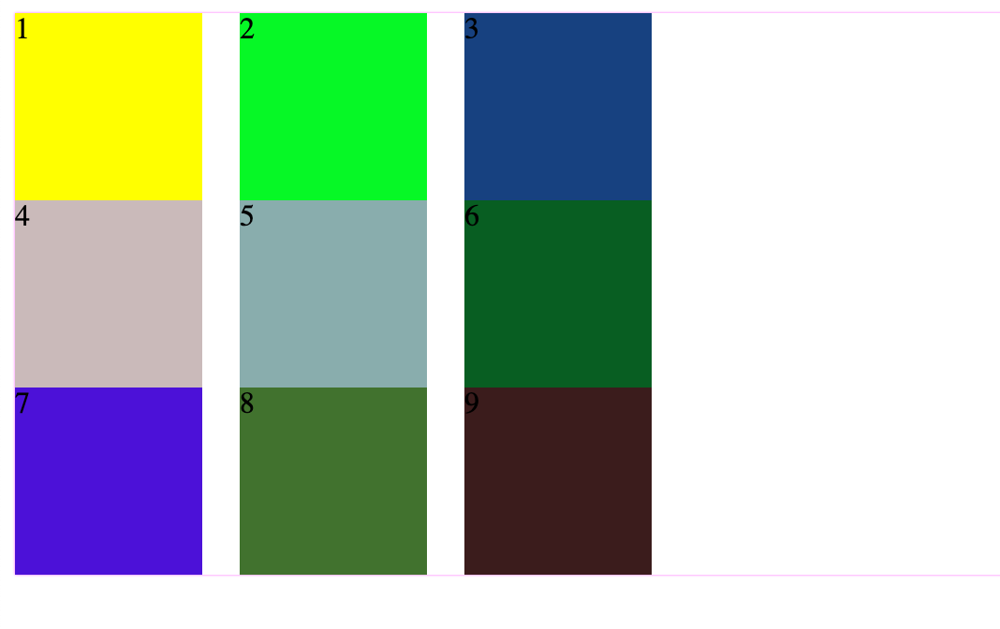
简写：
gap:20px 20px;
row-gapcolumn-gap简写形式；
gap省略了第二个值，浏览器认为第二个值等于第一个值。
grid-template-areas：网格布局允许指定"区域"（area），一个区域由单个或多个单元格组成。grid-template-areas属性用于定义区域。
.content {
box-shadow: 0 0 1px #f6f;
display: grid;
grid-template-areas: 'a b c' 'd e f' 'g h i';
}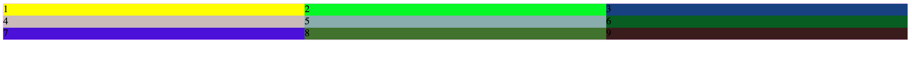
9.放置顺序：
grid-auto-flow：划分网格以后，容器的子元素会按照顺序，自动放置在每一个网格。默认的放置顺序是"先行后列"，即先填满第一行，再开始放入第二行；
默认是row；
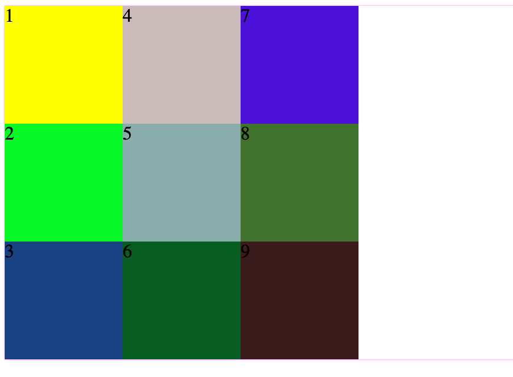
10.单元格水平位置与垂直位置
justify-items：属性设置单元格内容的水平位置（左中右）；
align-items：属性设置单元格内容的垂直位置（上中下）；
- start：对齐单元格的起始边缘。
- end：对齐单元格的结束边缘。
- center：单元格内部居中。
- stretch：拉伸，占满单元格的整个宽度（默认值）。
简写：place-items；
place-items: align-items justify-items
11.整体内容的位置：
justify-content：整个内容区域在容器里面的水平位置（左中右）；
align-content：整个内容区域的垂直位置（上中下）。
.content {
box-shadow: 0 0 1px #f6f;
display: grid;
grid-template-columns: 100px 100px 100px;
grid-template-rows: 100px 100px 100px;
justify-content: center;
align-content: center;
}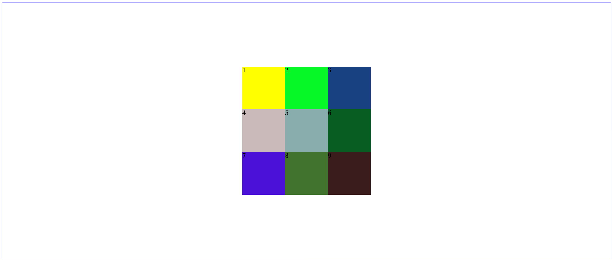
简写：place-content；
place-content：align-content justify-content；